Rafaella Cruz
Software Developer na Ericsson (AI Agents & R&D) | Estudante de Banco de Dados
Sobre mim
Olá! Sou a Rafaella, tenho 27 anos e sou de São José dos Campos. Sou curiosa por natureza e movida por desafios, e essa característica aparece tanto na forma como eu codifico quanto na minha vida fora da tela. Gosto muito de esportes, surf, praia e de viajar sempre que possível. Estar perto do mar me dá a sensação de que qualquer problema tem solução, e explorar lugares novos me ajuda a enxergar o mundo com perspectivas diferentes, algo que acaba influenciando também a forma como penso e resolvo problemas no trabalho.
Na área profissional, estou concluindo o 6º e último semestre de Banco de Dados na Fatec São José dos Campos, onde a cada semestre desenvolvemos projetos reais para empresas parceiras utilizando a metodologia SCRUM. Sou técnica em Administração pelo CEPHAS e Desenvolvedora WEB Full-Stack Júnior formada pelo bootcamp de tecnologia da Generation Brazil. Ao longo da graduação, atuei como desenvolvedora, Product Owner e Scrum Master, construindo sistemas que evoluíram desde aplicações em terminal até arquiteturas web full stack com Vue.js, Java Spring Boot, TypeScript e PostgreSQL.
Desde março de 2026, sou Software Developer na Ericsson, em Pesquisa e Desenvolvimento de soluções com Inteligência Artificial. Construo agentes inteligentes e a infraestrutura que os sustenta: personas, skills modulares, integrações via Model Context Protocol (MCP) e arquiteturas GraphRAG para recuperação contextualizada de conhecimento.
Contatos
Principais Conhecimentos
Minha Trajetória
Como cheguei à Fatec
Em 2023, eu trabalhava como desenvolvedora frontend PJ e cursava uma faculdade particular EAD, mas não estava satisfeita com a qualidade do ensino. Meu gestor na época, que estudou em uma das primeiras turmas de Banco de Dados da Fatec São José dos Campos, me contou sobre o curso e sobre a qualidade do ensino e dos professores.
Decidi tentar: fiz o vestibular no fim daquele ano e ingressei na turma do primeiro semestre de 2024.
Esses últimos três anos foram extremamente desafiadores, mas eu faria tudo de novo. Valeu muito a pena por todo o conhecimento que adquiri, pelos amigos que fiz e pelos professores incríveis com quem tive a honra de estudar e aprender.
Monitoria de Algoritmos
fev. 2025 a jun. 2026 · orientada pelo Prof. Fabiano Sabha
Durante quase um ano e meio, fui monitora da disciplina de Algoritmos. Ajudava os alunos do primeiro semestre a dar os primeiros passos em lógica de programação: tirava dúvidas sobre conceitos e exercícios, dava suporte na implementação dos algoritmos e no uso do VisualG, e compartilhava livros e outras fontes de estudo que fizeram diferença no meu próprio aprendizado.
Antes do primeiro semestre de monitoria começar, escrevi o AlgLog, um manual para quem está chegando na faculdade. Ele traz dicas de estudo, o passo a passo para instalar o VisualG e explica as estruturas sequencial, condicional e de repetição com exemplos comentados.
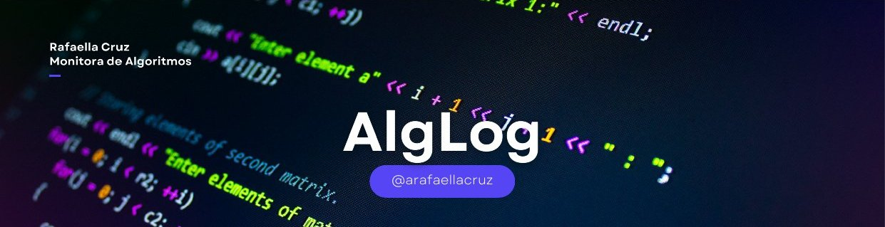
Baixar PDFAlgLog, o manual de apoio que escrevi para os alunos da monitoria. Clique na capa para baixar.
Ensinar o que eu tinha aprendido pouco tempo antes me obrigou a entender os conceitos com mais profundidade e a explicar a mesma ideia de várias formas diferentes, até encontrar a que fazia sentido para cada aluno.
Os projetos abaixo mostram o que construí ao longo dessa jornada.
Meus Projetos
Meu papel no time: Product Owner
No primeiro semestre de 2024, desenvolvemos a Calculadora Científica, uma aplicação em terminal criada para executar operações matemáticas, conversões entre bases numéricas e cálculos complementares como juros simples e função de segundo grau. O projeto foi desenvolvido em contexto acadêmico, com foco no aprendizado prático de lógica de programação e organização de software, atendendo a um cliente interno da própria Fatec.
O desenvolvimento foi dividido em sprints, com as primeiras entregas realizadas em VisualG para prototipação da lógica, e a evolução posterior para TypeScript. Essa transição representou um desafio importante para o time: além de reescrever as funcionalidades já implementadas, foi necessário adaptar o raciocínio de uma linguagem de pseudocódigo para uma linguagem orientada a tipos, com suporte a modularização real e versionamento em equipe. Aprender a trabalhar com Git e GitHub foi parte essencial desse processo, já que o projeto exigia colaboração simultânea entre os integrantes.
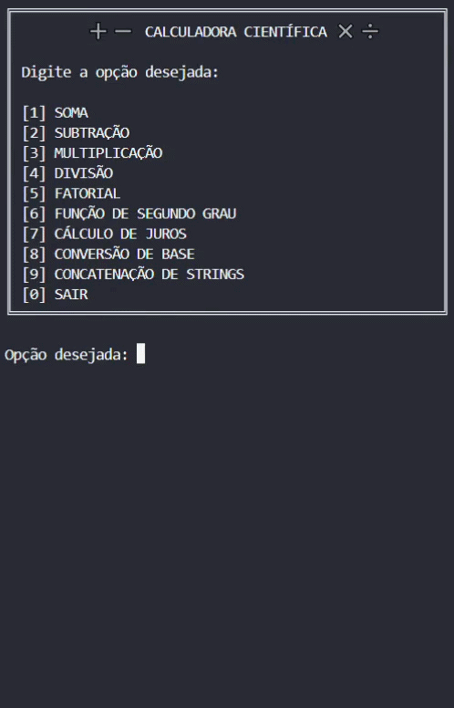
Demonstração da Calculadora Científica em funcionamento.
Tecnologias Utilizadas
Contribuições Pessoais
Neste primeiro projeto atuei como Product Owner: cuidei da visão do produto, do backlog e das validações das entregas com o cliente, e também participei do desenvolvimento do código.
Na fase de prototipação em VisualG, implementei as operações de soma e subtração. Quando o time migrou o projeto para TypeScript, assumi a reescrita da subtração, que passou por várias iterações: corrigi erros no cálculo com números reais, tratei os casos de NaN com laços que repetem a pergunta até o usuário informar um número válido, e formatei o resultado para exibir casas decimais apenas quando o valor não é inteiro. Também ajustei a tipagem do Node e a localização dos arquivos para que a operação compilasse corretamente no build.
Além da minha operação, trabalhei na experiência de uso do terminal como um todo. Melhorei a estrutura do menu principal e a exibição dos submenus, corrigi chamadas duplicadas de função e nomes de arquivos referenciados no menu, e reorganizei a estrutura de pastas do projeto, separando as versões em VisualG e TypeScript. Na reta final, padronizei os textos exibidos ao usuário e documentei esse padrão em um PDF de referência para o time, para que todas as operações falassem a mesma língua.
Fui a principal responsável pelo README do repositório, com mais de vinte atualizações ao longo do semestre: capa e elementos visuais, backlog do produto, validações feitas com o cliente e a seção de boas práticas. Nela defini as convenções do time: nomenclatura em camelCase, nomes e commits em inglês e um padrão de mensagens de commit (emoji, tipo e descrição) baseado em um guia que publiquei no meu próprio GitHub.
Hard Skills
- Lógica de ProgramaçãoIntermediário
- VisualGAvançado
- TypeScriptIntermediário
- Git / GitHubIntermediário
- Documentação Técnica (Markdown)Avançado
Lógica de Programação e VisualG: Usei o VisualG para estruturar a lógica das operações antes de qualquer sintaxe real. Foi nessa etapa que pensei em como acumular valores em uma subtração com quantidade variável de números, raciocínio que depois levei quase sem mudanças para o TypeScript.
TypeScript: A reescrita da subtração me obrigou a lidar com tipagem: conversão de entrada com parseFloat, verificação com isNaN e diferença entre inteiros e decimais na saída. Os commits de correção de bugs e de tipos do Node mostram que o aprendizado veio de errar, depurar e ajustar.
Git / GitHub: Foi meu primeiro projeto versionado em equipe, com mais de 80 commits meus no repositório. Além de usar a ferramenta, ajudei a definir como o time a usaria, ao propor o padrão de commits adotado pelo grupo.
Documentação Técnica: O README foi a principal vitrine do projeto para o cliente e para a banca. Mantê-lo atualizado a cada sprint, com backlog, validações e boas práticas, me ensinou a escrever documentação para quem não participou do desenvolvimento.
Soft Skills
- Trabalho em EquipeIntermediário
- OrganizaçãoIntermediário
- ProatividadeIntermediário
Trabalho em Equipe: Como era o primeiro projeto com desenvolvimento em equipe, o maior risco era cada um programar de um jeito. As convenções de nomenclatura e de commits que escrevi no README foram uma forma de criar acordos comuns e facilitar a integração das operações de todos no mesmo menu.
Organização: Reorganizei a estrutura de pastas do projeto e padronizei os textos da aplicação em um documento de referência. Isso deixou o projeto mais fácil de navegar e mais coerente para quem usava.
Proatividade: Assumi a documentação e a padronização sem que fossem tarefas do backlog. Também corrigi problemas em outras partes do projeto, como chamadas duplicadas e nomes de arquivos errados no menu.
Meu papel no time: Desenvolvedora (Dev Team)
No segundo semestre de 2024, desenvolvemos o PACER Assessment System, um sistema desktop criado para tornar o processo de avaliação de integrantes de equipe mais estruturado, transparente e rastreável. O projeto foi construído em contexto acadêmico e contemplava autenticação de usuários, gerenciamento de grupos, definição de critérios de avaliação, cadastro de sprints e geração de relatórios com os resultados individuais de cada integrante.
Atuei como desenvolvedora, responsável pela implementação de funcionalidades e pela interface da aplicação. Enquanto o time contava com um Product Owner cuidando da visão e documentação do produto, minha atuação esteve diretamente ligada à construção do sistema: desenvolvimento de telas, lógica de negócio e integração com o banco de dados.
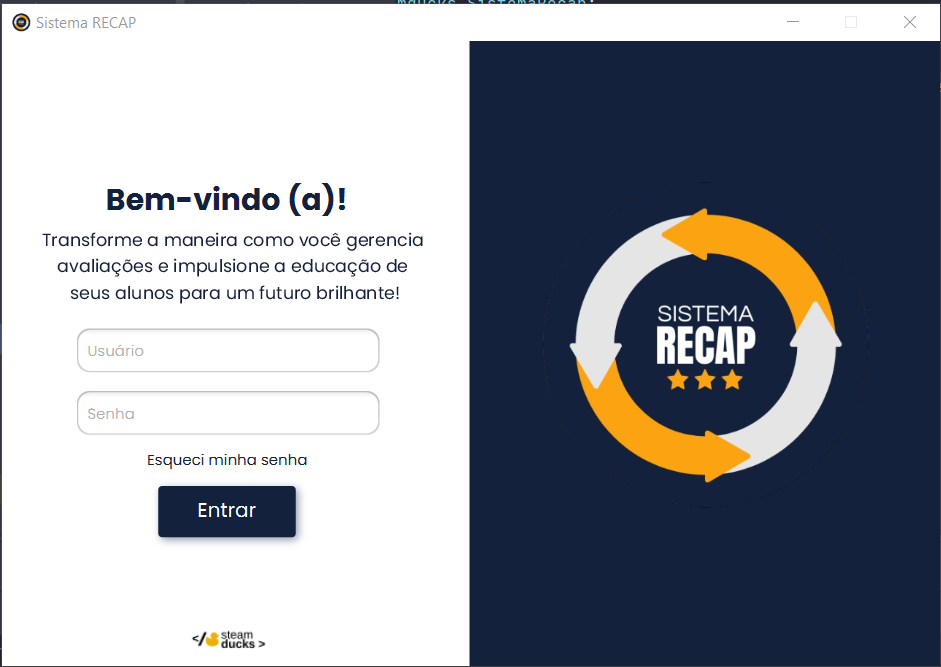
Tela principal do PACER Assessment System.
Tecnologias Utilizadas
Contribuições Pessoais
Desenvolvi o módulo de semestres de ponta a ponta: as telas FXML de cadastro, edição e gerenciamento, seus controllers, a classe de modelo Semestre e o SemestreDAO, com as operações de inserção, consulta e atualização em MySQL via JDBC e PreparedStatement. Também atualizei a classe de critérios de avaliação e ajustei os DAOs de usuários e equipes para atender às novas telas.
Fui responsável pela navegação e pela identidade visual do sistema. Construí os menus do professor e do aluno, padronizei o layout de todas as telas com uma folha de estilos compartilhada, adicionei ícones, logos e efeitos visuais, e defini a tela inicial do aluno. Implementei também a funcionalidade de atualização de senha, acessível pelo link "Esqueci minha senha" na tela de login, e corrigi o fluxo que reabria o login ao fechar o menu do professor.
Na entrega final, cuidei da distribuição do sistema. Gerei o executável .jar e uma versão .exe com ícone usando Launch4j, escrevi o manual de instalação e o manual do usuário, e corrigi o download do manual em PDF dentro da aplicação, que passou a ler o arquivo como recurso interno via InputStream para funcionar também quando o sistema roda empacotado.
Hard Skills
- JavaIntermediário
- JavaFX + FXML + CSSAvançado
- MySQL + JDBC (padrão DAO)Intermediário
- Empacotamento e distribuição (.jar / .exe)Intermediário
- Git / GitHubIntermediário
Java: Trabalhei em todas as camadas do módulo de semestres (modelo, DAO e controllers) e nos controllers de menu e login. Foi meu primeiro contato com uma aplicação orientada a objetos organizada em pacotes e com o sistema de módulos do Java (module-info.java), que precisei ajustar para expor cada novo controller ao JavaFX.
JavaFX + FXML + CSS: É a habilidade com mais evidências no projeto: dezenas de commits em views, menus e estilos. Separar a estrutura da tela (FXML), o comportamento (controller) e a aparência (CSS) me deu uma base que reaproveitei diretamente no frontend web dos semestres seguintes.
MySQL + JDBC: No SemestreDAO, escrevi as consultas SQL e usei PreparedStatement com parâmetros, o que evita SQL Injection, e chaves geradas automaticamente para recuperar o ID do registro inserido. Foi a primeira vez que conectei uma interface a um banco relacional real.
Empacotamento e distribuição: Fazer o sistema rodar fora da IDE trouxe problemas que não apareciam no desenvolvimento, como arquivos que deixam de ser encontrados quando estão dentro do .jar. Resolver o download do manual em PDF me ensinou a diferença entre ler um arquivo do disco e ler um recurso empacotado.
Soft Skills
- Atenção à Experiência do UsuárioIntermediário
- Comunicação EscritaIntermediário
- Comprometimento com a EntregaAvançado
Atenção à Experiência do Usuário: Grande parte dos meus commits foi de padronização de telas, ajustes de layout e nomes de botões. Busquei que professores e alunos navegassem pelo sistema sem estranhar mudanças de estilo entre uma tela e outra, e que pudessem recuperar a senha sem depender de outra pessoa.
Comunicação Escrita: Escrevi os manuais de instalação e do usuário, que transformam um sistema técnico em instruções que qualquer professor consegue seguir. Também deixei o manual acessível de dentro da própria aplicação.
Comprometimento com a Entrega: Na última semana do projeto, concentrei commits de ajustes finais, geração dos executáveis e correção do layout de login e do download do PDF. Meu foco foi garantir que o produto chegasse instalável nas mãos do cliente.
Meu papel no time: Desenvolvedora (Dev Team)
No terceiro semestre de 2025, desenvolvemos o Pontual, uma aplicação web para monitorar horas trabalhadas de funcionários de empresas terceirizadas. Nosso cliente, a Altave, é uma empresa que atua com coleta de imagens e reconhecimento facial. A empresa iniciou suas operações com balões meteorológicos e hoje aplica sua tecnologia em segurança, como em plataformas petrolíferas.
O caso apresentado pelo cliente envolvia um estaleiro onde empresas terceiras realizam manutenção em navios. As câmeras da Altave identificam os colaboradores e enviam essas informações ao sistema, que registra os pontos, calcula as horas trabalhadas e gera o valor de salário individualmente. O projeto incluiu a construção de interface para cadastro de empresas e profissionais, filtros de dados, extração de relatórios e dashboards interativos. Um dos desafios foi lidar corretamente com funcionários em escalas noturnas, onde o ponto atravessa a meia-noite, e permitir a edição manual de registros com histórico de alterações rastreável.
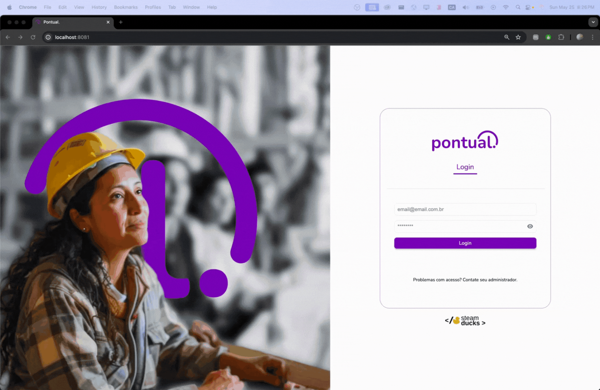
Demonstração do sistema Pontual em funcionamento.
Tecnologias Utilizadas
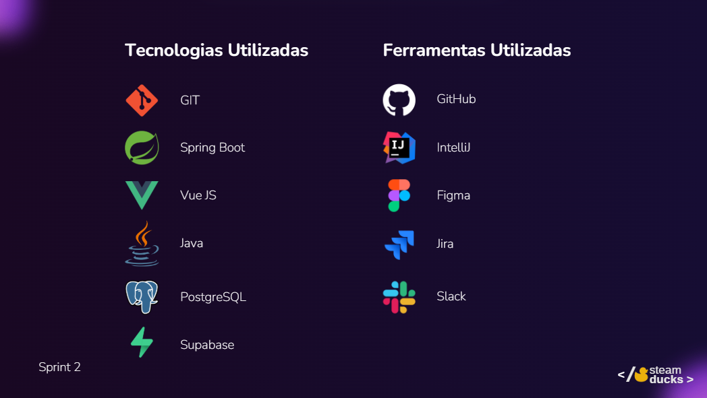
Contribuições Pessoais
Neste semestre atuei como desenvolvedora no Dev Team, com entregas em design, frontend e backend.
Na 1ª sprint, fui responsável por definir a paleta de cores e a identidade visual do projeto utilizando o Canva. Após essa definição, aceitei o desafio de aprender o Figma para transformar a identidade visual em protótipos navegáveis, criando wireframes das telas principais e mapeando os fluxos de navegação. No código, apliquei essa identidade nos componentes estruturais da interface em Vue.js: estilizei e refatorei a sidebar, o header, o layout administrativo e os botões reutilizáveis de criação e relatório, além das telas de empresas e funcionários.
No backend, construí o módulo de registros de ponto em Java Spring Boot, camada por camada: entidade, DTO, converter, repository, service e controller. Corrigi a consulta JPQL de registros por funcionário para tratar períodos com datas nulas e a tipagem dos parâmetros, e configurei o fuso horário padrão da aplicação para America/Sao_Paulo, essencial em um sistema em que o horário exato do ponto define o salário. Depois, adicionei o endpoint de exclusão e passei a registrar automaticamente a data da última alteração com @LastModifiedDate.
Na funcionalidade de histórico de alterações, criei a entidade, o repository, o DTO, o converter e o service do histórico, e refatorei o service de registros de ponto para gravar uma entrada no histórico a cada edição. Para saber quem fez a alteração, implementei a extração do e-mail do usuário a partir do token JWT recebido no cabeçalho de autorização, além da consulta que retorna o histórico completo de um registro. Também revisei as mensagens de erro e os campos da tela de login.
Hard Skills
- Java Spring Boot (arquitetura em camadas)Avançado
- JPA / JPQL + PostgreSQLIntermediário
- Spring Security + JWTIntermediário
- Vue.jsIntermediário
- FigmaIntermediário
- CanvaAvançado
Java Spring Boot: Construir o módulo de registros de ponto inteiro, da entidade ao controller, me fez entender por que cada camada existe: o DTO protege o contrato da API, o converter isola o mapeamento e o service concentra a regra de negócio, como a gravação do histórico a cada alteração.
JPA / JPQL + PostgreSQL: A consulta de pontos por funcionário e período precisava funcionar mesmo sem datas informadas, e corrigir isso exigiu entender como o JPQL trata parâmetros nulos e tipados. A modelagem da tabela de histórico, que guarda quem alterou, quando e o valor anterior, aplicou diretamente o que estudo em Banco de Dados sobre rastreabilidade.
Spring Security + JWT: Para auditar alterações, precisei ler o token JWT da requisição e extrair dele a identidade do usuário. Também ajustei quais endpoints exigiam autenticação, removendo liberações provisórias usadas durante o desenvolvimento.
Vue.js, Figma e Canva: Levei a identidade visual criada no Canva e prototipada no Figma para os componentes reais em Vue.js. Ter desenhado as telas antes de codificá-las tornou os ajustes de estilo mais rápidos e consistentes.
Soft Skills
- AdaptabilidadeAvançado
- CriatividadeAvançado
- Atenção às Regras de NegócioAvançado
Adaptabilidade: No mesmo semestre, atuei em design (Canva e Figma), frontend (Vue.js) e backend (Spring Boot), aprendendo Figma e Vue.js com as entregas da 1ª sprint já dependendo deles. Mudar de contexto entre essas frentes sem perder ritmo foi o maior desafio do projeto.
Criatividade: Defini a identidade visual e a proposta de design do projeto, traduzindo o contexto industrial do cliente em uma interface limpa, funcional e visualmente coerente.
Atenção às Regras de Negócio: Detalhes como o fuso horário da aplicação, a data da última modificação e o registro de quem alterou cada ponto existem porque o ponto define o salário do funcionário. Entender o impacto de cada um no cliente orientou as decisões que tomei no backend.
Meu papel no time: Scrum Master
No quarto semestre de 2025, desenvolvemos o Tráfegou!, uma aplicação web criada para apoiar o monitoramento contínuo da mobilidade urbana, proposta para atender a Prefeitura de São José dos Campos.O sistema consolida indicadores de tráfego por região, atribui níveis de monitoramento de acordo com os dados coletados, gera alertas automáticos em situações críticas e registra protocolos de ação associados a cada nível, apoiando a tomada de decisão por parte dos operadores.
A solução foi construída com arquitetura full stack, utilizando Vue.js 3 com TypeScript no frontend, Spring Boot com Java 17 no backend e banco de dados relacional PostgreSQL. O projeto contou ainda com mapas interativos para visualização geográfica das regiões monitoradas, dashboards com gráficos de indicadores, autenticação com controle de acesso por perfil e processamento contínuo de dados via schedulers que atualizavam os indicadores em tempo real.
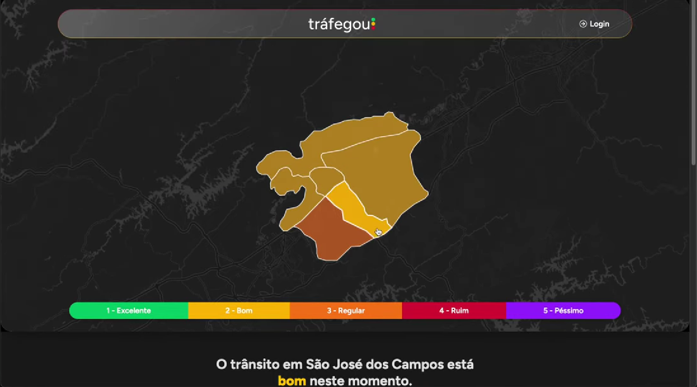
Dashboard principal do Tráfegou!.
Tecnologias Utilizadas
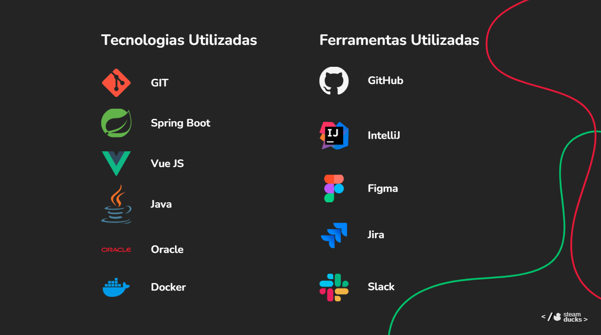
Contribuições Pessoais
Neste semestre atuei como Scrum Master do time de oito pessoas. Minha responsabilidade principal era o processo: facilitar as cerimônias do Scrum, acompanhar o andamento das sprints, ajudar a remover impedimentos e garantir que o time seguisse os acordos definidos para o projeto, como o padrão de commits, o template de pull requests, os cards do JIRA e as orientações para as dailys.
Além do papel de Scrum Master, contribuí diretamente com a base técnica do projeto. No frontend, criei o projeto tms-client do zero com Vue 3, TypeScript e Vite, já configurado com roteamento, Pinia, ESLint e Prettier. Em seguida, escrevi o Dockerfile e o docker-compose da aplicação para que todo o time rodasse o frontend no mesmo ambiente.
No backend, implementei as entidades JPA do Spring Boot a partir do modelo de banco definido pelo time: câmeras, regiões, indicadores, níveis, protocolos, registros de velocidade, usuários e perfis. Mapeei os relacionamentos entre elas, incluindo a chave composta da relação entre regiões e indicadores (RegionIndicatorId), e corrigi os tipos das colunas de valor para que o mapeamento ficasse fiel ao banco.
Hard Skills
- Scrum (Scrum Master)Avançado
- JPA / Hibernate (mapeamento objeto-relacional)Avançado
- Vue 3 + TypeScript + ViteIntermediário
- DockerIntermediário
- Git / GitHubAvançado
Scrum (Scrum Master): Depois de ter sido Product Owner no 1º semestre e desenvolvedora no 2º e no 3º, passei a enxergar o Scrum pelo lado de quem cuida do processo. Com isso, passei a usar as cerimônias e os acordos do time como ferramentas para manter o ritmo e a qualidade das entregas.
JPA / Hibernate: Mapear as entidades a partir de um modelo de banco já definido exigiu traduzir tabelas, chaves estrangeiras e uma chave composta para anotações JPA sem distorcer o modelo. Foi a aplicação direta de modelagem relacional, que é o centro da minha formação, dentro de uma aplicação Java.
Vue 3 + TypeScript + Vite: Criar o projeto frontend do zero significou escolher e configurar as ferramentas que todo o time usaria durante o semestre: tipagem, roteamento, gerenciamento de estado, lint e formatação.
Docker: Containerizar o frontend logo no início evitou o clássico "na minha máquina funciona" em um time grande, com cada integrante em um ambiente diferente.
Soft Skills
- Liderança FacilitadoraAvançado
- ComunicaçãoAvançado
- Visão SistêmicaAvançado
Liderança Facilitadora: Como Scrum Master, meu papel era criar condições para que o time trabalhasse bem. Liderar sem hierarquia, apoiando colegas e removendo bloqueios, foi uma habilidade nova para mim.
Comunicação: O Scrum Master fica entre o Product Owner, o time de desenvolvimento e os professores. Manter todos alinhados sobre prioridades, prazos e impedimentos exigiu uma comunicação clara e frequente.
Visão Sistêmica: Ter preparado tanto a base do frontend quanto as entidades do backend me deu uma visão de como as partes do sistema se conectavam. Isso ajudou a entender as dependências entre as tarefas do time e a antecipar impedimentos durante as sprints.
Meu papel no time: Desenvolvedora (Dev Team)
No primeiro semestre de 2026, desenvolvemos o SCAR (Sistema de Controle e Acompanhamento de Recursos), uma solução analítica para consolidar e visualizar os custos de projetos estratégicos. Nosso cliente foi a SIATT, empresa brasileira de defesa especializada em sistemas embarcados críticos e mísseis inteligentes, responsável por iniciativas como o MANSUP, o Míssil Antinavio Nacional de Superfície da Marinha do Brasil.
O núcleo do projeto foi a construção de um Data Warehouse capaz de consolidar dados de materiais, horas técnicas, projetos, programas e orçamento, permitindo análises históricas e multidimensionais por tempo, programa, projeto, material, colaborador e situação financeira. Os dados percorrem uma arquitetura em camadas (bronze, silver e gold) até chegarem aos dashboards, que respondem perguntas como: quanto cada projeto gastou, qual o desvio percentual em relação ao orçamento, qual a classificação de saúde financeira de cada projeto e quais estão em risco de estouro. Atuei no Dev Team, com entregas no backend em Python/Django, na engenharia de dados do DW e no frontend em Vue.js com TypeScript, e com uma frente de DevOps e qualidade: garantir que o TDD e os testes automatizados fossem de fato aplicados em todo o projeto.
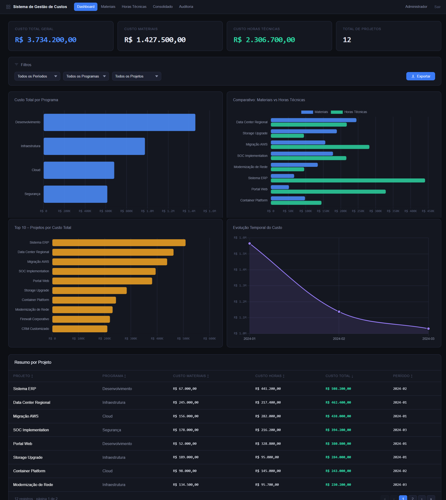
Dashboard principal do SCAR com a consolidação de custos por programa e projeto.
Tecnologias Utilizadas
Contribuições Pessoais
Na 1ª sprint, fui responsável pela base da engenharia de dados do Data Warehouse. Criei o schema bronze e o schema silver por meio de migrations no Django, modelei as entidades que compõem a estrutura do banco e desenvolvi os scripts de ETL que fazem a ingestão dos dados brutos para a camada silver. Também criei um Makefile para padronizar os comandos de execução do ambiente e escrevi os testes da aplicação seguindo TDD, o que deu ao time uma base confiável sobre a qual as demais camadas seriam construídas.
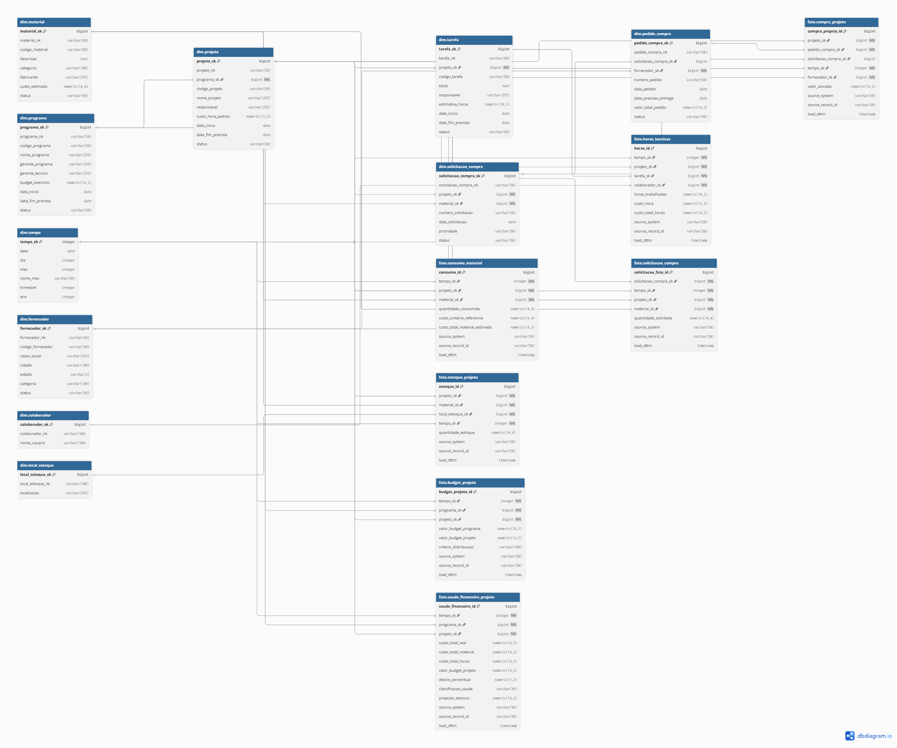
Modelo lógico do Data Warehouse, com dimensões e tabelas fato.
Na 2ª sprint, avancei para a camada gold, que concentra os dados prontos para análise. Implementei a tabela de indicadores de materiais, com o SQL de agregação, a migration, os comandos de ingestão e a API (models, serializers, views e rotas) que expõe esses indicadores ao frontend. Em seguida, desenvolvi o backend de orçamento: o snapshot de budget na camada gold, os selectors com as regras de consulta e os testes de selectors, serializers e views. No frontend, construí a tela de Orçamento e Saúde Financeira, primeiro com dados estáticos para validar o layout com o time e depois integrada ao backend, e implementei o tema claro/escuro global da aplicação.
Na 3ª sprint, fiquei responsável pela segurança de ponta a ponta. No backend, implementei a autenticação com JWT, o modelo de usuário customizado, o endpoint de login e classes de permissão por perfil aplicadas a todas as views. No frontend, implementei o formulário de login, o gerenciamento da sessão, os route guards e um composable usePermissions que esconde menus, cards, gráficos e colunas de custo de acordo com o perfil do usuário. Como o projeto lida com dados financeiros de programas de defesa, garantir que cada perfil visse apenas o que lhe cabia era um requisito central.
Em paralelo às funcionalidades, atuei na frente de DevOps garantindo que o TDD e os testes de unidade fizessem parte do dia a dia do time. No backend, montei a base da suíte de testes: as configurações de teste do Django (settings_test.py e conftest.py), a configuração do Pytest no pyproject.toml, os testes de migrations e os comandos do Makefile para rodar tudo de forma padronizada. Ao longo do semestre, mantive os testes de praticamente todos os módulos (usuários, materiais, orçamento, horas técnicas, dashboard, auditoria, consolidado e custos). Quando a autenticação passou a ser obrigatória em todas as rotas, adaptei as suítes unitárias e de integração do projeto inteiro para que continuassem válidas. No frontend, escrevi testes com Vitest para views, services, composables e componentes, além de testes E2E de navegação com Playwright.
Garantir esse nível de qualidade foi o maior desafio do semestre. Fazer um time de oito pessoas escrever o teste antes do código, manter as suítes verdes a cada mudança e passar pelos critérios de lint, cobertura e CI levou mais tempo do que o previsto, e o time precisou de uma sprint extra para validar os processos. Nessa sprint, me dediquei à qualidade do código do frontend: criei o composable useChartsBase com as configurações compartilhadas dos gráficos e migrei os demais composables para consumi-lo, decompus o header em subcomponentes menores e criei componentes reutilizáveis (MetricCard, StatusBadge e UploadZone) para substituir marcação duplicada entre as telas. Todos vieram com testes unitários e foram ajustados até passarem no pipeline de CI.
Hard Skills
- Data Warehouse (bronze, silver e gold)Intermediário
- ETL e ingestão de dadosAvançado
- Python + Django REST FrameworkIntermediário
- PostgreSQL + SQL analíticoAvançado
- Autenticação JWT e controle de acessoIntermediário
- Vue.js 3 + TypeScriptIntermediário
- TDD e testes automatizados (Pytest, Vitest e Playwright)Avançado
- Docker + CI/CDIntermediário
Data Warehouse e ETL: Foi a habilidade central do semestre e a mais ligada à minha formação em Banco de Dados. Aplicá-la exigiu pensar o dado em etapas: o bronze guarda o dado como chega, o silver limpa e padroniza, e o gold entrega indicadores prontos, como o snapshot de orçamento e os indicadores de materiais. Construir as duas pontas desse fluxo me mostrou por que separar armazenamento de análise torna as consultas dos dashboards mais simples e rastreáveis.
Python + Django REST Framework: Foi a primeira vez que usei Python e Django em um projeto real, depois de dois semestres com Spring Boot. Apliquei o que já sabia sobre camadas e contratos de API e aprendi o jeito Django de organizar o código: migrations versionando o schema, serializers validando dados e selectors isolando as regras de consulta.
Autenticação JWT e controle de acesso: Implementei a segurança nas duas camadas: o backend garante que um perfil não consiga acessar dados que não deveria, e o frontend esconde o que aquele perfil não precisa ver. Fazer as duas me deu clareza de que a proteção real acontece no backend.
TDD e testes automatizados: Foi a minha responsabilidade dentro da frente de DevOps. Além dos meus próprios testes, cuidei da infraestrutura de testes (configurações, fixtures e comandos padronizados) e de manter válidas as suítes de todos os módulos a cada mudança. Seguir o ciclo Red, Green, Refactor mudou minha forma de desenvolver: passei a definir o comportamento esperado antes de pensar no código.
Docker + CI/CD: Todos os PRs precisavam passar por lint (Black, Ruff e ESLint), testes e pipeline de CI antes do merge, rodando em ambiente containerizado. Ajustar o código até ele passar no CI me ensinou a tratar o pipeline como critério objetivo de pronto.
Soft Skills
- Aprendizado ContínuoAvançado
- Responsabilidade e AutonomiaAvançado
- Pensamento AnalíticoAvançado
- ColaboraçãoAvançado
- ResiliênciaAvançado
Aprendizado Contínuo: O semestre trouxe uma stack nova (Python, Django e conceitos de Data Warehouse) e, já na 1ª sprint, minha entrega era a fundação do banco sobre a qual o resto do time dependia. Estudei e apliquei os conceitos diretamente no projeto, sem a margem de aprender primeiro e entregar depois.
Responsabilidade e Autonomia: Assumi funcionalidades completas de ponta a ponta, como orçamento e login com controle de acesso, cuidando do banco, da API, da tela e dos testes. Ser dona de uma funcionalidade inteira significou responder pelo resultado final.
Pensamento Analítico: Trabalhar com perguntas de negócio do cliente, como desvio orçamentário e risco de estouro, exigiu traduzir uma necessidade de gestão em estrutura de dados e regras de cálculo. Antes de escrever qualquer SQL, era preciso entender qual decisão aquele indicador iria apoiar.
Colaboração: Em um time de oito pessoas, com entregas no backend e no frontend acontecendo em paralelo, as refatorações que fiz no final do semestre, como os componentes compartilhados e o useChartsBase, foram pensadas para facilitar o trabalho dos colegas e reduzir a duplicação de código entre telas desenvolvidas por pessoas diferentes. Da mesma forma, manter as suítes de teste de módulos escritos por outros colegas exigiu entender o código deles e alinhar mudanças que afetavam o time todo.
Resiliência: Garantir TDD e testes em todo o projeto foi bem difícil, a ponto de o time precisar de uma sprint extra para validar os processos. Encarei isso como parte do aprendizado. Foi nessa sprint que os processos se consolidaram, e entregar um projeto bem testado acabou sendo uma das experiências mais gratificantes da graduação.
Meu papel no time: Product Owner
No segundo semestre de 2026, desenvolvemos o Akpedia, uma solução para classificar automaticamente e centralizar a busca de documentos técnicos de engenharia. Nosso cliente foi a Akaer, empresa brasileira de engenharia sediada em São José dos Campos, que atua nos setores aeronáutico, espacial e de defesa, com forte atuação em projeto estrutural, engenharia de produto e integração de sistemas de alta complexidade. Em programas desse porte, o volume de documentação técnica é enorme, e organizar esse acervo impacta diretamente a produtividade, a conformidade e a preservação do conhecimento de engenharia.
O sistema permite buscar documentos por palavra, frase ou pergunta em linguagem natural, usando busca semântica com embeddings armazenados no PostgreSQL com pgvector. Ao enviar um novo documento, o usuário recebe uma sugestão de categoria gerada por IA, que segue para uma fila de aprovação onde um aprovador revisa, edita e publica o documento. O acesso é autenticado, com três perfis (Usuário, Aprovador e Administrador) e visibilidade de documentos por departamento, além de consentimento aos termos de uso e notificação de incidentes de dados. A arquitetura é dividida em três serviços: frontend em Vue.js com TypeScript, backend em Spring Boot e um serviço de Machine Learning em Python com FastAPI. Atuei como Product Owner de um time de cinco pessoas.

Demonstração do Akpedia. Clique na imagem para assistir no YouTube.
Tecnologias Utilizadas
Contribuições Pessoais
Atuação como Product Owner. Neste último projeto da graduação atuei como Product Owner, voltando ao papel com que comecei a graduação. A trajetória pelos papéis do Scrum foi: Product Owner no 1º semestre, desenvolvedora no 2º, 3º e 5º, Scrum Master no 4º e Product Owner novamente no 6º. Minha responsabilidade era o produto: entender a necessidade da Akaer, traduzi-la em épicos e histórias de usuário, priorizar o backlog, definir o que cada sprint precisava entregar e validar se o que foi construído atendia ao que foi pedido. Escrevi no README os três épicos do projeto, com o objetivo e o escopo de cada sprint, o cronograma de entregas e o Product Backlog com catorze histórias organizadas por prioridade, sprint e perfil de usuário.
A priorização seguiu uma lógica de redução de risco: a 1ª sprint validou a mecânica de busca com uma base de documentos de exemplo, antes de conectar os documentos reais da Akaer; a 2ª sprint trouxe o envio de documentos, a sugestão de categoria por IA e a fila de aprovação; e a 3ª sprint ficou com autenticação, perfis, visibilidade por departamento e os requisitos de LGPD, já que dependiam das duas primeiras funcionando bem. Ao final de cada sprint, cabia a mim conferir as entregas contra os critérios de aceite das histórias antes de apresentá-las ao cliente na Sprint Review.
Fluxo do usuário. Como PO, desenhei o produto a partir da jornada de cada perfil. O sistema tem três perfis cumulativos: o Padrão busca, pergunta à IA, envia documentos e acompanha seus envios; o Aprovador faz tudo isso e ainda revisa a fila de pendentes; e o Administrador gerencia usuários, permissões por setor, auditoria, termos de uso e avisos de vazamento. A peça central é o caminho de um documento: ninguém publica diretamente no acervo. O documento enviado entra na fila de pendentes já com uma categoria sugerida pela IA, um aprovador lê o arquivo, corrige título, descrição e categoria e decide entre publicar ou devolver com o motivo, e o autor acompanha cada mudança de status. Como a categoria define quais setores podem ver o documento, a revisão humana é o que garante que a busca só mostre informação confiável para quem tem direito a ela.
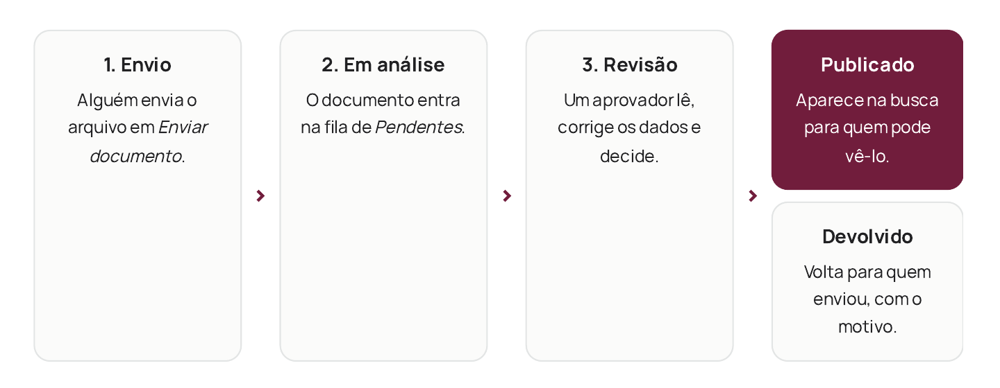
O caminho de um documento no Akpedia, do envio à publicação ou devolução.
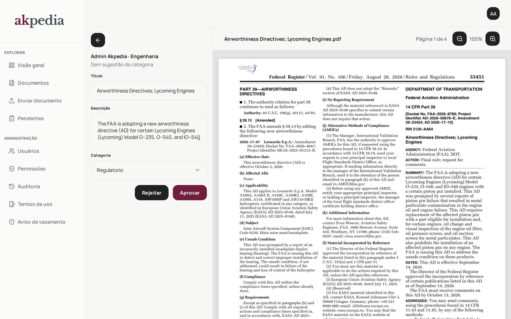
Tela de revisão: dados do envio à esquerda e o documento completo à direita.
Validação de LGPD. Como o Akpedia guarda dados pessoais de funcionários (nome, e-mail, CPF, setor e o registro das ações de cada um), a adequação à Lei Geral de Proteção de Dados entrou no backlog como requisito de produto. Fiquei responsável por validar que cada ponto atendia à lei antes de ser considerado pronto:
- Consentimento versionado: no primeiro acesso, e sempre que uma nova versão dos termos de uso é publicada, o usuário só consegue usar o sistema depois de aceitá-los. Cada aceite fica registrado por versão, e o administrador vê quem já aceitou.
- Direito de recusa e exclusão: quem não aceita os termos pode excluir a própria conta na mesma tela, e qualquer usuário pode excluir a conta em "Minha conta". Os dados pessoais são anonimizados, enquanto os documentos enviados continuam no acervo sem o nome do autor.
- Correção de dados: o próprio usuário altera nome e setor; e-mail e CPF, por serem dados de identificação, passam por uma solicitação com motivo aprovada pelo administrador.
- Rastreabilidade: a auditoria registra quem enviou, aprovou, devolveu, aceitou termos ou mudou papéis, e os registros de quem excluiu a conta são pseudonimizados.
- Comunicação de incidentes (art. 48): o administrador envia um aviso de vazamento por e-mail aos titulares afetados, com os dados do incidente, e o envio só é liberado após a confirmação de que a ANPD já foi informada.
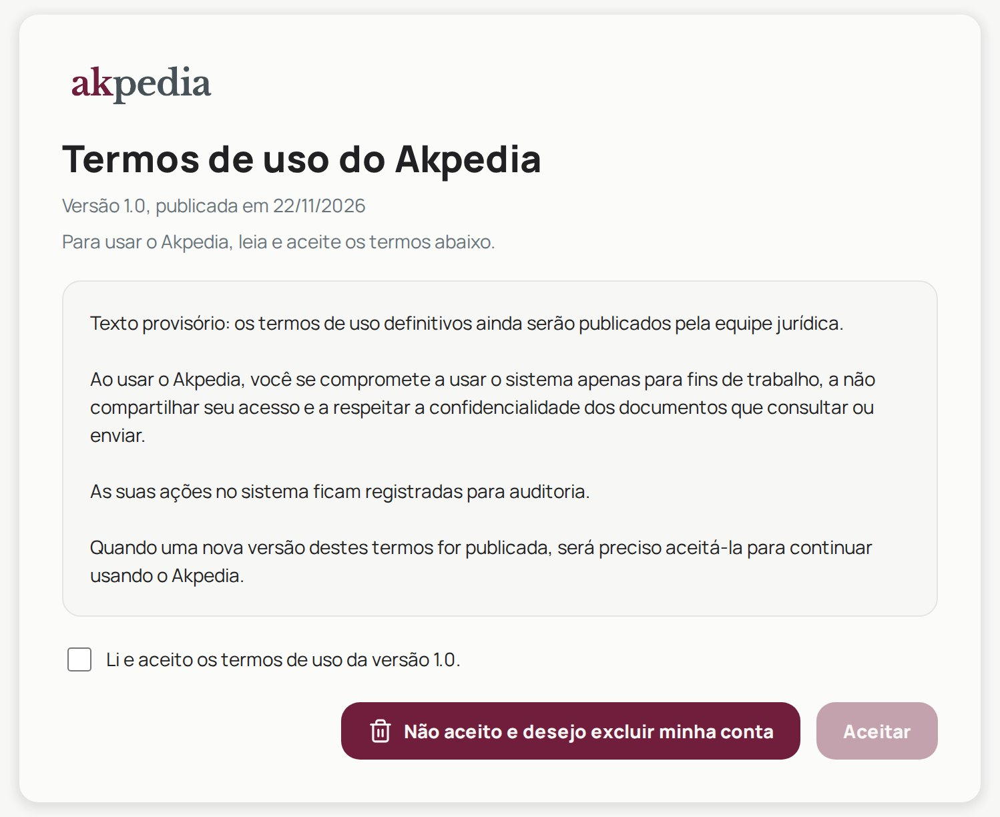
Aceite dos termos de uso, com a opção de recusar e excluir a conta.
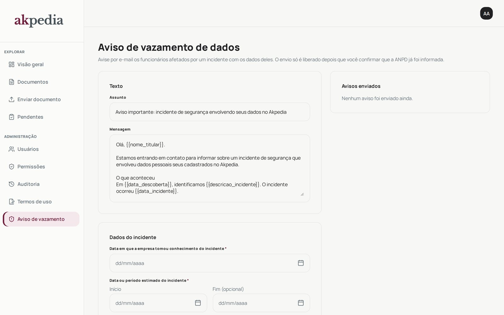
Aviso de vazamento de dados, liberado só após a confirmação de que a ANPD foi informada.
Desenvolvimento. Além do papel de PO, contribuí com a funcionalidade central da 1ª sprint: a busca de documentos. No serviço de ML, criei o endpoint que gera o embedding da consulta digitada pelo usuário, aplicando o prefixo de consulta que os modelos E5 esperam. No backend, criei a rota de busca em Spring Boot, com o SearchService que valida a consulta e o vetor recebido, consulta os documentos mais similares no pgvector com um score mínimo de relevância e um limite configurável de resultados, além do tratamento de erros e dos testes unitários das duas pontas.
Documentação para o usuário final. Na reta final, escrevi o Manual de Instalação e o Manual do Usuário, guias passo a passo em português pensados para pessoas sem conhecimento de programação. O de instalação cobre os programas necessários, o download e a inicialização do sistema e a solução de problemas comuns; o do usuário cobre login, busca, perguntas à IA, envio e acompanhamento de documentos, além das seções específicas de aprovadores e administradores.
Hard Skills
- Scrum (Product Owner)Avançado
- Gestão de backlog e escrita de histórias de usuárioAvançado
- Mapeamento de fluxo do usuárioAvançado
- LGPD e privacidade de dadosIntermediário
- Busca semântica com embeddings e pgvectorIntermediário
- Spring Boot + JavaIntermediário
- Python + FastAPIBásico
- Documentação técnica e de usuárioAvançado
Scrum (Product Owner): Voltar a ser PO depois de cinco semestres, agora tendo passado pelo desenvolvimento e pela função de Scrum Master, me colocou de novo do lado de quem decide o quê e por quê, mas com muito mais repertório do que no 1º semestre. Cuidar do processo e cuidar do produto são responsabilidades diferentes, e ter passado pelas duas me ajudou a entender como cada papel depende do outro para o time entregar bem.
Gestão de backlog e histórias de usuário: Escrever histórias do ponto de vista de cada perfil, como "evitar ler um documento inteiro para descobrir sua categoria" para o aprovador, exigiu pensar no problema do usuário antes da solução técnica. Ordenar o backlog por risco e dependência, além da importância, foi o que deu sentido à sequência das sprints.
Mapeamento de fluxo do usuário: Pensar no caminho completo de um documento, do envio à publicação ou devolução, mostrou lacunas que uma lista de telas esconderia: o que o autor vê enquanto espera, o que acontece quando o aprovador rejeita e por que o motivo precisa voltar para quem enviou. Cada estado do fluxo virou um critério de aceite.
LGPD e privacidade de dados: Validar a LGPD me fez sair da leitura da lei e chegar a comportamentos verificáveis no sistema: o usuário consegue recusar os termos? O que sobra quando ele exclui a conta? O aviso de incidente pode sair sem a ANPD ter sido informada? Para quem estuda Banco de Dados, foi especialmente interessante ver como anonimizar um registro sem quebrar as relações com documentos, aceites e auditoria.
Busca semântica com embeddings e pgvector: Foi meu primeiro contato com busca vetorial. Diferente de uma consulta SQL por palavra-chave, a busca compara o significado da pergunta com o dos documentos, e detalhes como o prefixo de consulta do modelo, a validação das dimensões do vetor e o score mínimo de relevância fazem diferença direta na qualidade dos resultados. Para quem estuda Banco de Dados, ver o PostgreSQL funcionando como banco vetorial ampliou minha visão do que um banco relacional pode fazer. Essa experiência dialoga diretamente com o meu trabalho na Ericsson, onde construo arquiteturas de RAG e GraphRAG para dar contexto a agentes de IA.
Spring Boot + Java e Python + FastAPI: A rota de busca atravessa dois serviços em linguagens diferentes. Definir o contrato entre eles, com o vetor e as informações do modelo trafegando do serviço de ML para o backend, reforçou a importância de interfaces claras em uma arquitetura distribuída.
Documentação técnica e de usuário: Escrever os manuais para quem não programa exigiu trocar o vocabulário técnico por passos concretos e verificáveis. Documentar o sistema do ponto de vista de quem vai usá-lo também foi uma forma de validar se o produto fazia sentido como um todo.
Soft Skills
- Visão de ProdutoAvançado
- Priorização e Tomada de DecisãoAvançado
- ComunicaçãoAvançado
- Empatia com o UsuárioAvançado
- Responsabilidade ÉticaAvançado
Visão de Produto: Como PO, precisei enxergar o Akpedia como um produto para os engenheiros da Akaer. Cada épico respondia a uma pergunta de negócio, e o backlog precisava contar uma história coerente do início ao fim do semestre.
Priorização e Tomada de Decisão: Deixar a segurança e o controle de acesso para a última sprint, mesmo sendo um requisito importante para o cliente, foi uma decisão consciente para validar primeiro o valor central do produto, que é encontrar o documento certo.
Comunicação: O PO fica entre o cliente e o time. Transformar a necessidade da Akaer em histórias claras o suficiente para o time desenvolver, e depois traduzir o que foi construído de volta em manuais e entregas para o cliente, foi o centro do meu trabalho no semestre.
Empatia com o Usuário: Escrever histórias para três perfis diferentes e manuais para quem não tem formação técnica me fez pensar constantemente em quem estaria do outro lado da tela: o que essa pessoa precisa, o que ela já sabe e onde ela pode travar.
Responsabilidade Ética: Validar a LGPD lembrou que por trás de cada linha do banco existe uma pessoa. Garantir que um funcionário possa recusar, corrigir ou apagar seus dados, e que seja avisado se algo der errado, também faz parte da qualidade do produto.
Encerramento da Graduação
O Akpedia fechou uma trajetória que começou com uma calculadora em terminal no 1º semestre. Ao longo de seis projetos, fui Product Owner no primeiro e no último, desenvolvedora no 2º, 3º e 5º e Scrum Master no 4º, e saio da Fatec entendendo um sistema por inteiro: do dado no banco à tela, do processo do time à necessidade do cliente e às obrigações legais de quem guarda dados de outras pessoas.